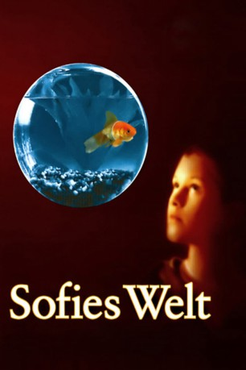
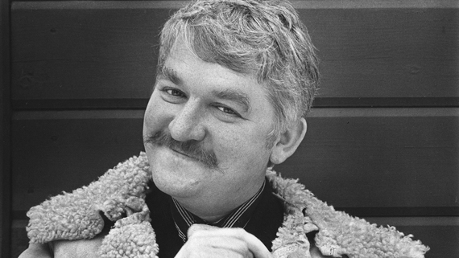
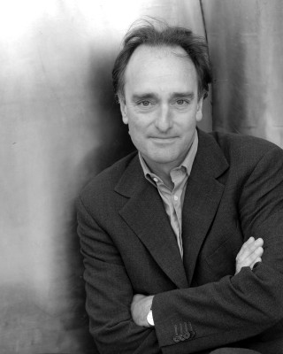
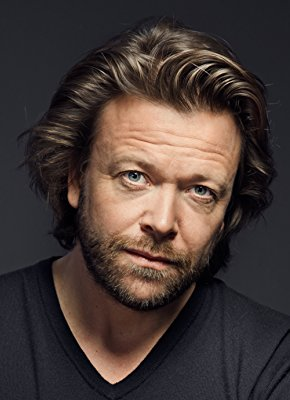
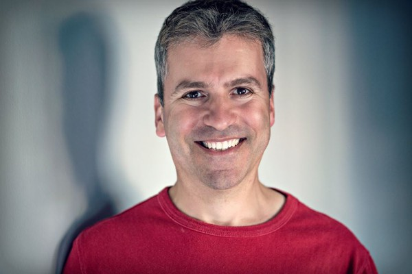
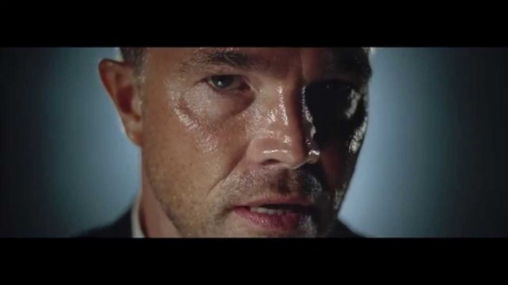

#11299 Sofies Welt
Alternativ: Sophie's World (Englischer Titel)
 
 IMDB-Wertung: 5.9 / 10
IMDB-Wertung: 5.9 / 10  Metascore: 0
Metascore: 0 
Wer bist du? steht in dem Brief, den die 14-jährige Sofie im Briefkasten findet. Und Woher kommt die Welt? in einem zweiten. Aber woher kommen diese Briefe, wer hat sie geschickt? Und wer hat die fabelhafte Philosophiearbeit geschrieben, für die der Lehrer Sofie so lobt? Sofie kann sich nicht erinnern, sie je geschrieben zu haben - obwohl die Handschrift ganz eindeutig ihre eigene ist. Fragen über Fragen, Geheimnisse über Geheimnisse. Auf der Suche nach Antworten reist Sofie, begleitet von dem mysteriösen Philosophen Alberto Knox, durch die Zeit...
Jahr: 1999
Dauer: 107 Minuten
FSK: 6
Land: Norwegen Studio: Constantin FilmTonspuren:
Untertitel:
Auflösung: SD (716x432) Größe: 998 MB
Genre: Drama, Fantasy, Geschichte
Regisseur: Erik Gustavson
Drehbuch: Jostein Gaarder, Petter Skavlan
Soundtrack: Randall Meyers
Darsteller:
- Tomas von Brömssen als
-  Hans Alfredson als
- Minken Fosheim als
-  Mark Tandy als
-  Kåre Conradi als
 Jesper Christensen als
Jesper Christensen als  Lars Arentz-Hansen als
Lars Arentz-Hansen als -  Philip Hersh als
- Yassmine Johansen als
-  Jon Øigarden als
- Silje Storstein als
- Andrine Sæther als
- Bjørn Floberg als
- Nils Vogt als
- Edda Trandum Grjotheim als
- Arne Haakonaasen Dahl als
- Sullivan Lloyd Nordrum als
- Kjersti Holmen als
 Ingar Helge Gimle als
Ingar Helge Gimle als - Giorgos Floros als
- Sven Henriksen als
- Espen Skjønberg als
- Eindride Eidsvold als
- Ola Otnes als
- Finn Schau als
- Rocco Petruzzi als
- Vanessa Borgli als
- Christian Skolmen als
- Michael Harbour als
- Pjotr Sapegin als
- Jon Eivind Gullord als
- Sofie Cappelen als
- Lars Reynert Olsen als
- Victor Sobchak als
- Andrea Gustavsson als
- Kim Haugen als
- Geir Pettersen als
- Maria Sand Gustavson als
- Kari Simonsen als
- Christoffer Staib als
- Lars Steinar Sørebø als
Datei: X:\1999\Sofies Welt (1999, FSK6, 716x432).mkv seit 17.06.2019
Festplatte: Gemischt-01+Anime
 Es gibt insgesamt 81 Filme in der Gruppe '1999'
Es gibt insgesamt 81 Filme in der Gruppe '1999'